Texto extraído da edição fornecida, sem atualização normativa. Consulte a página original para conferir tabelas, formulários e instruções ilustradas. A numeração dos links corresponde à página do arquivo PDF.
Apresentação
PDF · p. 1Esta página contém conteúdo gráfico. Consulte a reprodução original abaixo.
Legislação
PDF · p. 2Lei nº 8.112, de 11 de dezembro de 1990 e
suas alterações.
Lei Complementar nº 73, de 10 de
fevereiro de 1993
Decreto nº 10.835, de 14 de outubro de
2021
Lei nº 9.007, de 17 de março de 1995
Lei nº 6.999, de 7 de junho de 1982
Portaria SEDGG/ME nº 6.066, de 11 de
julho de 2022
Portaria MGI nº 136, de 16 de fevereiro
de 2023
1. LEGISLAÇÃO BÁSICA 2
É dever do servidor/empregado público/empregado público, da
Organização Militar (OM) e da Região Militar (RM) ler e acompanhar
a atualização da legislação que se refere aos assuntos tratados
neste Caderno de Orientação.
São referências de legislação:
Ver página original — tabelas, imagens e diagramas
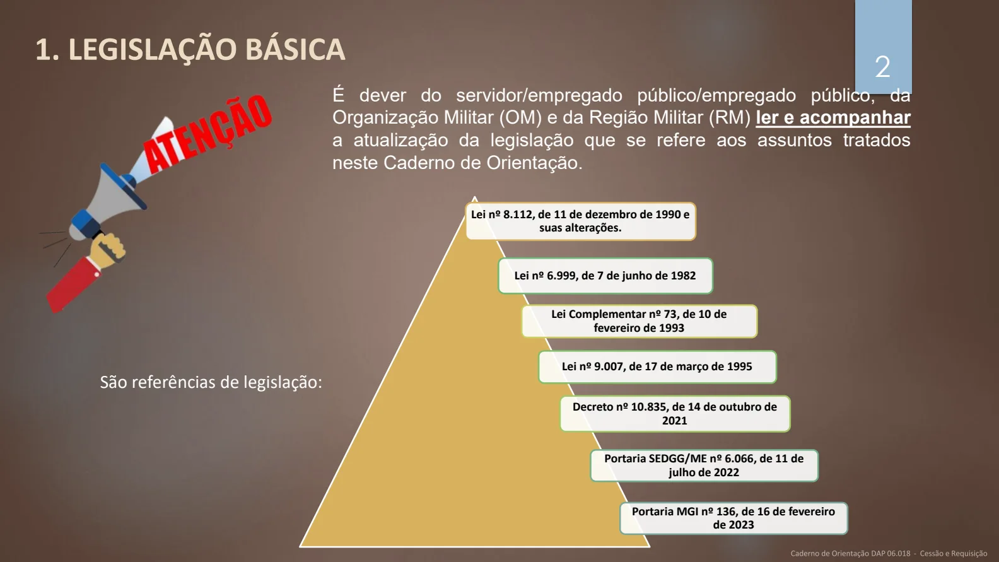
Conceitos
PDF · p. 32. CONCEITOS
2.1. CESSÃO:
É o ato autorizativo pelo qual o
servidor/empregado público, sem suspensão ou
interrupção do vínculo funcional com a origem,
passa a ter exercício em outro órgão ou
entidade.
2.2. REQUISIÇÃO:
É o ato irrecusável em que o servidor/empregado público requisitado passa a
ter exercício no órgão ou na entidade requisitante, sem alteração da lotação
no órgão ou na entidade de origem.
CESSÃO
Ver página original — tabelas, imagens e diagramas
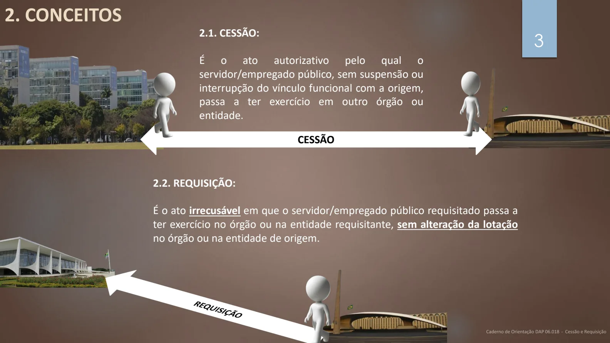
Conceitos
PDF · p. 42. CONCEITOS 2.3. CEDENTE:
Órgão ou entidade de origem do servidor/empregado público cedido.
Se o C Ex ceder um servidor/empregado público para outro órgão/entidade,
ele será o órgão cedente. (NESTE CASO, UM ÓRGÃO/ENTIDADE SOLICITOU A
CESSÃO DE UM SERVIDOR DO C Ex)
2.4. REQUISITADO:
Órgão ou entidade de origem do servidor/empregado público requisitado.
2.5. CESSIONÁRIO:
Órgão ou entidade onde o servidor/empregado público exercerá suas atividades.
Se o C Ex receber um servidor/empregado público originário de outro órgão/entidade,
ele será o cessionário. (NESTE CASO, ELE SOLICITOU A CESSÃO DE UM
SERVIDOR/EMPREGADO PÚBLICO DE OUTRO ÓRGÃO/ENTIDADE)
2.6. REQUISITANTE:
Órgão ou entidade que possui prerrogativa expressa de requisição, no qual o
servidor/empregado público exercerá suas atividades.
O C Ex não tem prerrogativa de requisição.
Ver página original — tabelas, imagens e diagramas
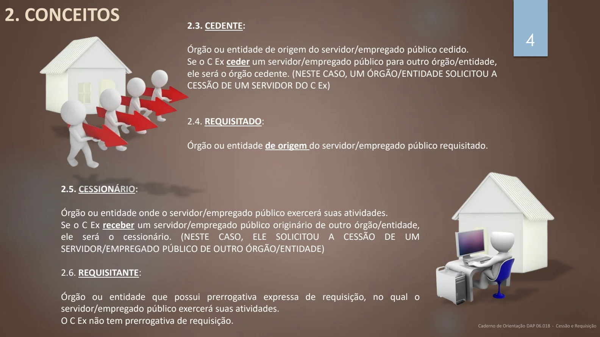
Requisitos
PDF · p. 53. REQUISITOS:
3.1. CESSÃO:
Pedido do cessionário
Concordância do cedente e do
Servidor/empregado público
Exercício de cargo em comissão
ou função de confiança ou
atendimento a situações
previstas em leis específicas
3.2. REQUISIÇÃO:
Requisitante deve possuir prerrogativa
expressa de requisição
Para ambos os casos, exige-se a
formalização pelo órgão de origem por
meio de portaria, publicada no Diário
Oficial da União (DOU)
Ver página original — tabelas, imagens e diagramas
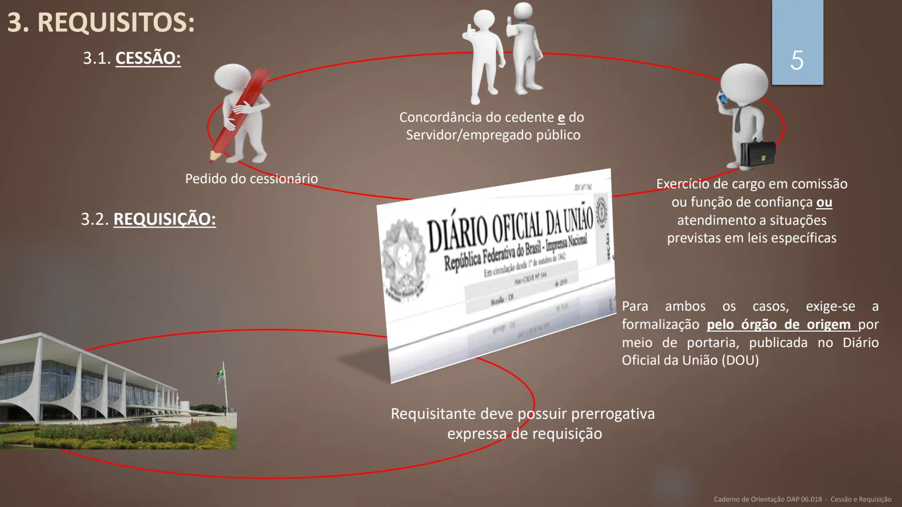
Cessão
PDF · p. 64. INFORMAÇÕES GERAIS - CESSÃO:
4.1. Na cessão não há suspensão ou interrupção do vínculo funcional
com o órgão/entidade de origem.
4.2. Exceto se houver disposição legal em contrário, a cessão somente
poderá ocorrer para o exercício de cargo em comissão ou função de
confiança.
4.3. O exercício de cargo em comissão ou função de confiança com graduação mínima dos níveis
13, 15, 17 ou 18 será exigido quando a cessão for para outros poderes, para órgãos
constitucionalmente autônomos ou para outros entes federativos.
4.4. O exercício de cargo em comissão ou função de confiança com graduação mínima do nível 13,
será exigido quando a cessões implicarem o reembolso pela administração pública federal, direta ou
indireta.
Esta exigência não será aplicada se a cessionária for empresa estatal não dependente de recursos do
Tesouro Nacional para o custeio de despesas de pessoal ou para o custeio em geral.
Ver página original — tabelas, imagens e diagramas
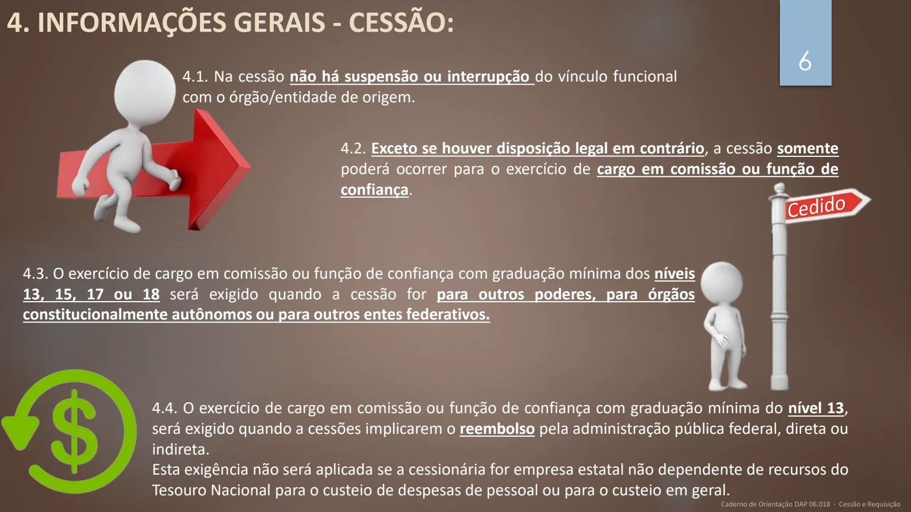
Cessão
PDF · p. 74. INFORMAÇÕES GERAIS – CESSÃO (cont.):
4.5. O servidor/empregado público deverá continuar exercendo suas atividades no
órgão/entidade cedente até a sua entrada em efetivo exercício no órgão/entidade
cessionário, sob pena de perda da remuneração, na forma da legislação pertinente.
4.6. O cessionário deverá informar ao cedente a data da efetiva entrada
em exercício do servidor/empregado público cedido para fins das
atualizações sistêmicas pertinentes à movimentação efetivada.
4.8. Será dispensado novo ato de cessão nas hipóteses de alteração:
a) do cargo ou da função de confiança exercido; ou
b) do órgão, da autarquia ou da fundação pública de exercício no âmbito da
administração pública federal.
Na uso da dispensa de novo ato de cessão:
a) será obrigatória a comunicação, com antecedência, ao cedente; e
b) será verificada a manutenção das condições legais e regulamentares para a
cessão.
4.7. Compete ao órgão ou à entidade cessionária acompanhar a frequência do
servidor/empregado público durante o período da cessão e informar ao órgão cedente
qualquer ocorrência, inclusive faltas não justificadas ou em desacordo com a legislação
vigente.
Ver página original — tabelas, imagens e diagramas
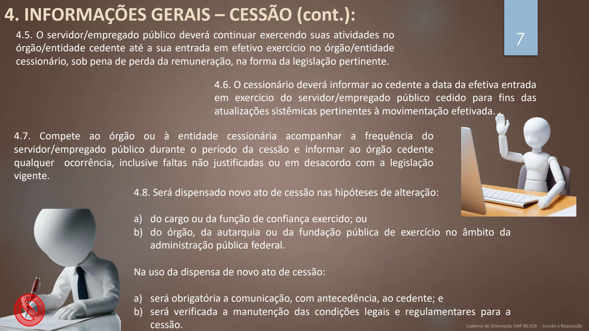
Requisição
PDF · p. 85. INFORMAÇÕES GERAIS - REQUISIÇÃO:
5.1. A requisição é o ato irrecusável, em que o servidor/empregado público
requisitado passa a ter exercício no órgão ou na entidade requisitante, sem
alteração da lotação no órgão ou na entidade de origem.
5.2. A requisição somente será realizada por órgão ou entidade que possua prerrogativa expressa
de requisitar agentes públicos.
Têm prerrogativa de requisição:
• Presidência e Vice-Presidência da República
• Advocacia-Geral da União - AGU;
• Tribunal Regional Eleitoral - TRE;
• Defensoria Pública da União – DPU;
• Dentre outros que venham a ter previsão legal.
5.3. A requisição não será nominal e o órgão ou a entidade requisitada poderá
indicar o servidor/empregado público de acordo com as atribuições a serem
exercidas no órgão ou na entidade requisitante.
Obs.: A Presidência da República ou a Vice-Presidência da República podem fazer a
requisição NOMINALMENTE.
Ver página original — tabelas, imagens e diagramas
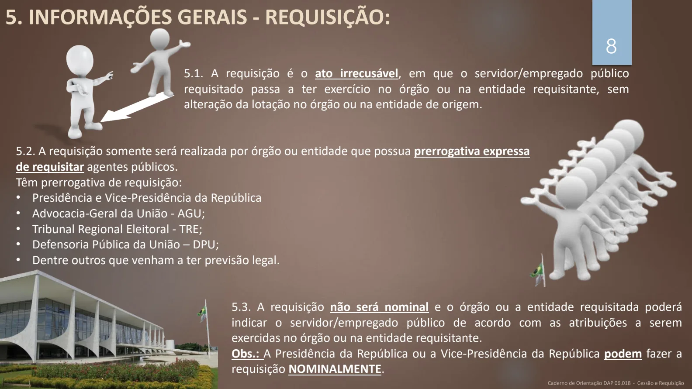
Requisição
PDF · p. 95. INFORMAÇÕES GERAIS - REQUISIÇÃO (cont.):
5.4. Na requisição, não há prejuízo da remuneração ou do salário permanente do
servidor/empregado público, incluídos encargos sociais, abono pecuniário,
gratificação natalina, férias e adicional de um terço.
5.5. Compete ao órgão ou à entidade requisitante acompanhar a frequência do
servidor/empregado público durante o período da requisição e informar ao órgão
requisitado qualquer ocorrência, inclusive faltas não justificadas ou em desacordo
com a legislação vigente.
5.6. A requisição independe de exercício de cargo em comissão ou de função de
confiança.
C
SEM CHEFIA
OU
COM CHEFIA
5.7. O processo de requisição deverá ser simplificado, dispensadas consultas internas ou exigência de
apresentação de documentos complementares a respeito do servidor/empregado público pelo órgão ou entidade
requisitada e terá prioridade sobre os demais processos de movimentação de servidores/empregados públicos.
Manutenção das gratificações
PDF · p. 106. MANUTENÇÃO DAS GRATIFICAÇÕES DE DESEMPENHO:
6.1. O servidor ocupante de cargo das carreiras do PGPE¹ lotado no C Ex e que vier a ter exercício
em outro órgão/entidade, por meio de cessão ou requisição, manterá a Gratificação de
Desempenho (GDPGPE) SOMENTE nos seguintes casos:
a) quando cedidos para órgão ou entidade do Poder Executivo Federal e investidos em
cargo em cargos comissionados ou em função de confiança com graduação nos
níveis 5, 7 e 10: situação na qual perceberá a respectiva gratificação de desempenho
calculada com base nas regras aplicáveis como se estivesse em efetivo exercício no
respectivo órgão ou na entidade de lotação;
b) quando requisitado para a Presidência ou Vice-Presidência da República, pela Justiça
Eleitoral e pelos demais órgãos/entidades que têm prerrogativa de requisição
especificada em lei: situação na qual perceberá a respectiva gratificação de
desempenho calculada com base nas regras aplicáveis como se estivesse em efetivo
exercício no respectivo órgão ou na entidade de lotação; e
c) quando cedido para órgãos ou entidades da União distintos dos indicados no item
“b” e investidos em cargos comissionados ou em função de confiança com
graduação mínima dos níveis 13, 15, 17 ou 18: perceberá a GDPGPE calculada com
base no resultado da avaliação institucional do período.
¹Observados os critérios da Lei nº 11.357, de 19 de outubro de 2006, art. 7 -E, incluído pela Lei nº 11.907, de 2 de fevereiro de 2009.
Manutenção das gratificações
PDF · p. 116. MANUTENÇÃO DAS GRATIFICAÇÕES DE DESEMPENHO
(cont.):
6.2. O servidor ocupante de cargo da Carreira de Tecnologia Militar² lotado no C Ex
e que vier a ter exercício em outro órgão/entidade, por meio de cessão ou
requisição, manterá a Gratificação de Desempenho (GDATEM) SOMENTE nos
seguintes casos:
a) quando requisitado pela Presidência ou Vice-Presidência da República
ou nas hipóteses de requisição previstas em lei: situação na qual
perceberá a GDATEM calculada com base nas regras aplicáveis como se
estivessem em efetivo exercício no respectivo órgão ou entidade de
lotação; e
b) quando cedido para órgãos ou entidades da União distintos dos
indicados no item “a” e investido em cargos comissionados ou em
função de confiança com graduação mínima dos níveis 13, 15, 17 ou 18:
situação na qual perceberá a respectiva gratificação de desempenho
calculada com base no resultado da avaliação institucional do período.
²Observados os critérios da Lei nº 9.657, de 3 de junho de 1998, art. 12, com redação dada pelas Leis nº 11.907, de 2 de fevereiro de 2009) e 13.328, de 29 de julho de 2016.
Manutenção das gratificações
PDF · p. 126. MANUTENÇÃO DAS GRATIFICAÇÕES DE DESEMPENHO(cont.):
6.3. O servidor ocupante de cargo da Carreira da Área de Ciência e Tecnologia³,
lotado no C Ex e que vier a ter exercício em outro órgão/entidade, por meio de
cessão ou requisição, manterá a Gratificação de Desempenho (GDACT) SOMENTE
nos seguintes casos:
a) quando cedido para entidades vinculadas ao seu órgão de lotação: situação
na qual perceberá a GDACT calculada com base nas regras aplicáveis como se
estivesse em efetivo exercício no seu órgão de lotação;
b) quando requisitado pela Presidência ou Vice-Presidência da República ou
em casos previstos em lei: situação na qual perceberá a a GDACT calculada
com base nas regras aplicáveis como se estivesse em efetivo exercício no seu
órgão de lotação; e
c) quando cedido para órgãos ou entidades da União distintos dos indicados
nos itens “a” e “b” e investidos em cargos comissionados ou em função de
confiança com graduação mínima dos níveis 13, 15, 17 ou 18: situação na
qual perceberá a GDACT calculada com base com base no resultado da
avaliação institucional do período.
³Observados os critérios da Lei nº 11.344, de 8 de setembro de 2006, art. 19 -J, incluído pela Lei nº 11.907, de 2 de fevereiro de 2009
Ver página original — tabelas, imagens e diagramas
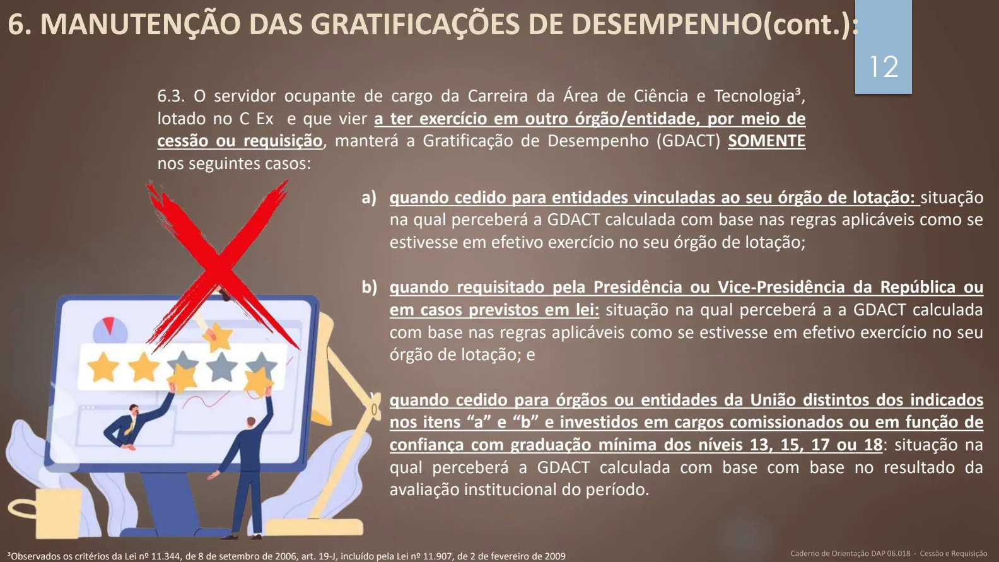
Prazos de cessão
PDF · p. 137. PRAZOS - CESSÃO:
7.1. A cessão será concedida por prazo indeterminado.
7.2. A cessão poderá ser encerrada, a qualquer momento, por ato unilateral do cedente, do cessionário ou do
servidor/empregado público cedido.
7.3. O retorno do servidor/empregado público ao órgão ou à entidade de origem, quando
requerido pelo cedente, será realizado por meio de notificação ao cessionário.
Prazos de cessão
PDF · p. 147. PRAZOS – CESSÃO (cont.):
7.4. Na hipótese de cessão em curso há mais de um ano, o cessionário poderá exigir a
manutenção da cessão, no interesse da administração pública, pelo prazo de até um
mês, contado da data de recebimento da notificação do cedente ou do requerimento do
servidor/empregado público.
7.5. Não atendida a notificação supramencionada, no prazo estabelecido, o
servidor/empregado público será notificado diretamente pelo cedente para se
apresentar ao órgão ou à entidade de origem no prazo de um mês, contado da data
de recebimento da notificação pelo servidor/empregado público, sob pena de
caracterização de ausência imotivada.
7.6. Torna-se sem efeito o ato de cessão na hipótese de o servidor/empregado público não
se apresentar ao órgão cessionário no prazo máximo de 30 (trinta) dias contados da
publicação da portaria.
Ver página original — tabelas, imagens e diagramas
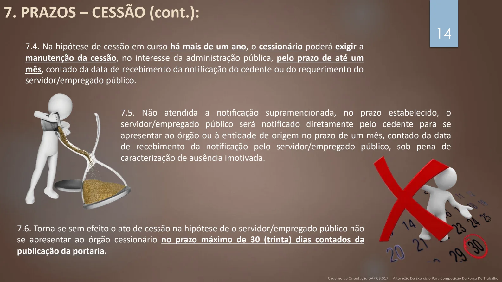
Prazos de cessão
PDF · p. 157. PRAZOS – CESSÃO (cont.):
7.7. Quando a cessão implicar o deslocamento de sede, o servidor/empregado
público terá, no mínimo, 10 (dez) e, no máximo, 30 (trinta) dias de prazo,
contados da publicação do ato, para a retomada do efetivo desempenho das
atribuições do cargo, incluído nesse prazo o tempo necessário para o
deslocamento para a nova sede.
7.8. Não se aplica o prazo supramencionado ao deslocamento dentro
da mesma região metropolitana, aglomeração urbana ou
microrregião, constituídas por municípios limítrofes e regularmente
instituídas.
Prazos de requisição
PDF · p. 168. PRAZOS - REQUISIÇÃO:
8.1. A requisição será concedida por prazo indeterminado, exceto se houver
disposição legal em contrário.
8.3. A requisição não poderá ser encerrada por ato unilateral do órgão ou da entidade
requisitada.
8.4. As requisições que impliquem reembolso pela administração pública federal, direta e
indireta, somente ocorrerão com a observância à disponibilidade orçamentária e
financeira do órgão ou da entidade responsável pelo ônus do ressarcimento para efetuar
o reembolso.
8.2. Os agentes públicos requisitados para a Presidência da República ou para a Vice-Presidência da República
devem entrar em exercício no prazo máximo de sete dias corridos, contados da data da entrada do processo
de requisição no órgão ou entidade requisitada, ressalvada a hipótese de deslocamento de sede.
Ver página original — tabelas, imagens e diagramas
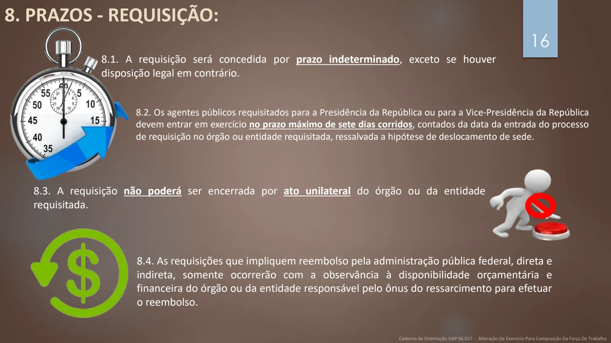
Remuneração e reembolso
PDF · p. 179. REMUNERAÇÃO E REEMBOLSO:
9.1. REMUNERAÇÃO:
O ônus do pagamento da remuneração do servidor/empregado público movimentado será
do órgão ou entidade de ORIGEM.
9.2. REEMBOLSO:
Ocorre quando o empregado público for proveniente de empresa pública ou sociedade de
economia mista não dependente de recursos do Tesouro Nacional para o custeio total ou parcial
de despesas de para pessoal ou para o custeio em geral.
Neste caso, é do órgão ou da entidade de DESTINO a obrigação de reembolso da remuneração ou
do salário vinculado ao cargo ou ao emprego permanente do servidor/empregado público
federal.
9.3. NÃO PODERÁ ser solicitada ou mantida a cessão no caso de indisponibilidade financeira e
orçamentária do reembolso.
Documentos necessários
PDF · p. 1810. DOCUMENTOS NECESSÁRIOS:
DOCUMENTO RESPONSÁVEL PELO
FORNECIMENTO/ELABORAÇÃO OBSERVAÇÕES
Ofício de solicitação Órgão solicitante (de destino) Deve solicitar, ao órgão/entidade de origem, a deliberação sobre a
cessão do servidor/empregado público identificado.
Ofício de autorização (anuência) para a movimentação Órgão de origem Em resposta à solicitação do órgão solicitante
Anuência do servidor/empregado público Servidor/empregado público interessado na movimentação, a
pedido da DAP -
Pedido de cessão ao ministério a que o órgão de origem é vinculado Órgão solicitante Anexo A
Portaria Ministério a que o órgão de origem é vinculado Anexo B
10.1. CESSÃO:
DOCUMENTO RESPONSÁVEL PELO
FORNECIMENTO/ELABORAÇÃO OBSERVAÇÕES
Ofício de solicitação Órgão solicitante (de destino) Deve solicitar, ao órgão/entidade de origem, a deliberação sobre a
cessão do servidor/empregado público NÃO identificado.
Ofício de indicação Órgão de origem Após identificação do servidor apto à requisição, conforme indicações
da necessidade requisitada.
Pedido de requisição ao ministério a que o órgão de origem é vinculado Órgão solicitante -
Portaria Ministério a que o órgão de origem é vinculado -
10.2. REQUISIÇÃO:
Ver página original — tabelas, imagens e diagramas
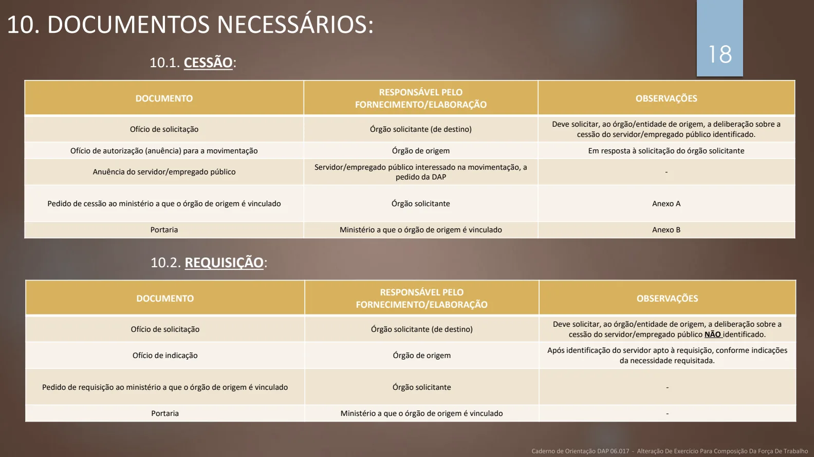
Tramitação
PDF · p. 19OM
•Identificar
servidor/
empregado
público
interessado e
apto à cessão
para o C Ex.
•Instruir processo
com o currículo
do servidor/
empregado
público
identificado e
encaminhar o
pedido à DAP.
SERVIDOR
INTERESSADO
•Elaborar e assinar
a declaração de
anuência
DAP
•Encaminhar o
pedido ao
Ministério da
Defesa, por
meio do
Gabinete do
Comandante do
Exército.
MINISTÉRIO DA
DEFESA
•Encaminhar
ofício ao
órgão/entidade
de origem.
ÓRGÃO DE
ORIGEM
•Deliberar sobre
o pedido de
cessão e devolve
ao Ministério da
Defesa.
MINISTÉRIO DA
DEFESA
•Devolve o
processo ao
Gabinete do
Comandante do
Exército.
DAP
•Recebido o
processo do
Gab. Do
Comandante do
Exército a DAP
deve:
•Instruir o
processo com os
documentos
necessários,
conforme item
10.1 deste
caderno.
•Encaminhar o
processo ao
Ministério da
Defesa, por
meio do Gab.
Cmt Ex
MINISTÉRIO DA
DEFESA
•Conferir o
processo.
•Elaborar e
publicar a
portaria de
cessão.
ÓRGÃO DE
ORIGEM
•Liberar o
servidor
/empregado
público no
Sistema de
Pessoal Civil, no
prazo descrito
neste caderno.
RM/OM
•Receber o
servidor/
empregado
público no
sistema e
informá-lo sobre
a necessidade
de apresentação
no prazo
prescrito neste
caderno.
19
11. TRAMITAÇÃO – PEDIDO DE CESSÃO PARA EXERCÍCIO NO
COMANDO DO EXÉRCITO:
Ver página original — tabelas, imagens e diagramas
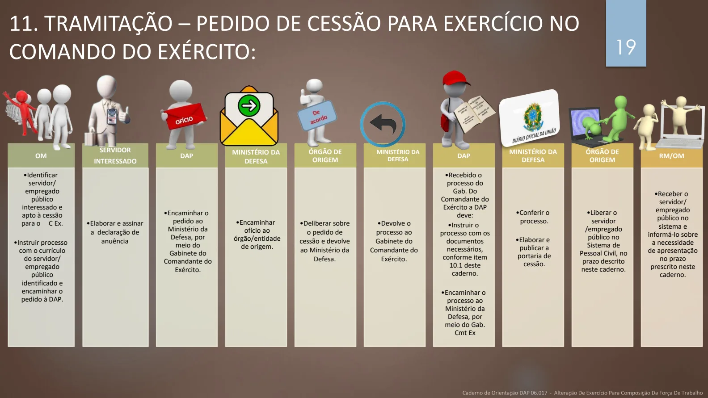
Tramitação
PDF · p. 20ÓRGÃO SOLICITANTE
•Identificar servidor do
C Ex que esteja
interessado e apto à
cessão.
•Instruir processo com o
currículo do servidor
identificado e
encaminhar o pedido
ao Ministério da
Defesa, com vistas ao
Gab. do Cmt do Ex.
MINISTÉRIO DA DEFESA
•Receber o processo e
direcionar ao Gab. do
Cmt do Ex.
DAP
•Recebido o processo
do Gab. Do Cmt do
Ex, consultar a
RM/OM.
RM/OM
•Deliberar sobre a
cessão e encaminhar
resultado para a DAP.
•Consultar o servidor
interessado.
•Se autorizado,
instruir o processo
com a declaração de
anuência emitida
pelo servidor
interessado.
DAP
•Instruir o processo
com os documentos
necessários, conforme
item 10.1 deste
caderno.
•Encaminhar o
processo ao
Ministério da Defesa,
por meio do Gab.
Cmt Ex
MINISTÉRIO DA
DEFESA
•Conferir o processo.
•Elaborar e publicar a
portaria de cessão.
RM/OM
•Liberar o servidor no
Sistema de Pessoal
Civil, no prazo
descrito neste
caderno.
ÓRGÃO DE DESTINO
•Receber o servidor
no sistema e
informá-lo sobre a
necessidade de
apresentação no
prazo prescrito neste
caderno.
20
12. TRAMITAÇÃO – PEDIDO DE CESSÃO DE SERVIDOR DO C Ex
PARA EXERCÍCIO EM OUTRO ÓRGÃO/ENTIDADE:
Ver página original — tabelas, imagens e diagramas
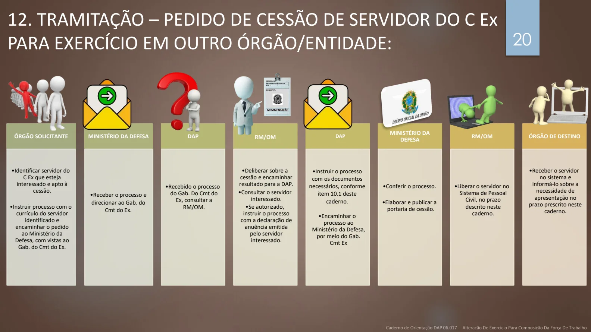
Tramitação
PDF · p. 21ÓRGÃO REQUISITANTE
• Encaminhar ofício ao C Ex, via
Ministério da Defesa, com vistas
à requisição de servidor não
identificado.
DAP
• Identificar servidor apto à
requisição e responder ao
órgão/entidade requisitante.
• Encaminhar, ao Ministério da
Defesa, via Gab. Do Cmt do
Exército, a sugestão do
servidor a ser movimentado.
MINISTÉRIO DA DEFESA
• Publicar a portaria de
requisição
RM/OM
• Liberar o servidor público no
Sistema de Pessoal Civil.
ÓRGÃO REQUISITANTE
• Receber o servidor/
empregado público no
sistema.
21
13. TRAMITAÇÃO – REQUISIÇÃO
Ver página original — tabelas, imagens e diagramas
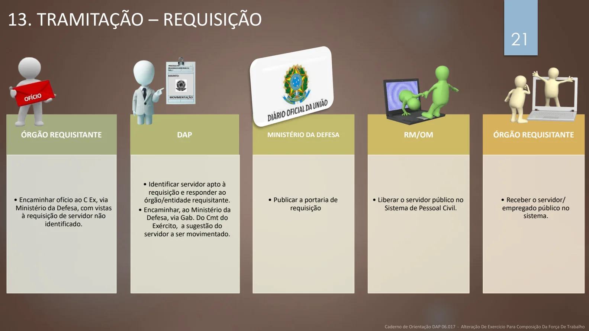
Fontes e elaboração
PDF · p. 22ELABORAÇÃO:
ASSESSORIA TÉCNICA DA SPC/DAP
SUBSEÇÃO DE CADASTRO DA SPC/DAP
MARÇO DE 2024
Para conhecer melhor o assunto, leia as
legislações indicadas no início deste caderno, disponíveis no link:
https://legis.sigepe.gov.br/legis/pesquisa-avancada
Ver página original — tabelas, imagens e diagramas
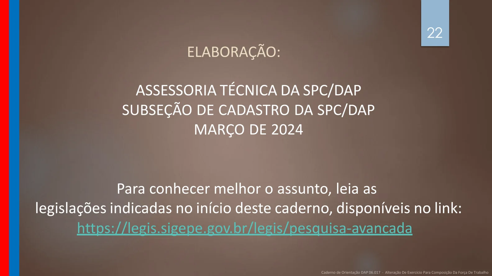
Anexos e portarias
PDF · p. 23ANEXOS
ANEXO A
Solicitação de Cessão*
MINISTÉRIO DA DEFESA
EXÉRCITO BRASILEIRO
(escalões hierárquicos até a OM expedidora)
(Denominação histórica)
SOLICITAÇÃO DE CESSÃO
Órgão cedente:
Órgão cessionário:
Servidor(a)/Empregado(a):
Matrícula:
Cargo/Emprego:
Fundamento legal da cessão:
Cargo/função a ser ocupada:
Reembolso: ( ) Sim ( )Não
Unidade onde serão desempenhadas as
atividades:
Localidade onde serão desempenhadas as
atividades:
Competências institucionais da unidade:
Atividades que serão desempenhadas:
Entregas previstas:
*Fonte: PORTARIA SEDGG/ME Nº 6.066, DE 11 DE JULHO DE 2022
Ver página original — tabelas, imagens e diagramas
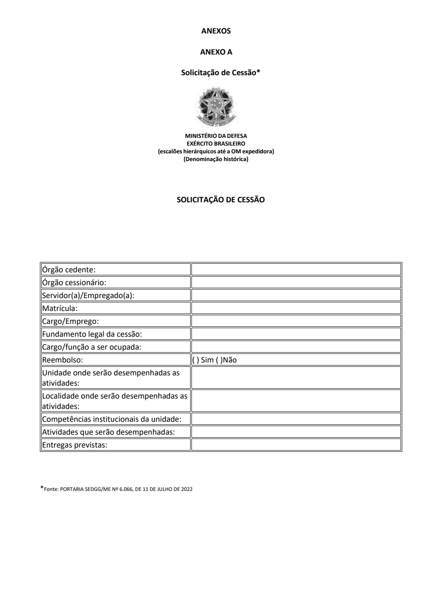
Anexos e portarias
PDF · p. 24ANEXO B
Portaria de Cessão*
(brasão do Ministério de Estado)
PORTARIA DE CESSÃO
O MINISTRO DE ESTADO (nome da pasta), considerando o disposto no art. 93 da Lei nº
8.112, de 11 de dezembro de 1990, regulamentado pelo Decreto nº 10.835, de 14 de outubro de 2021,
publicado no Diário Oficial da União de 15 seguinte, e na Lei nº (lei do cargo ou carreira a que pertence o
servidor), e demais informações que constam do processo nº (nº do processo), resolve:
Art. 1º Ceder o(a) servidor(a)/empregado(a) (nome) ___________, matrícula nº (nú mero)
___________, pertencente ao Quadro de Pessoal do (a) (nome do órgão ou entidade), _______________
para exercício no (nome do órgão ou entidade) _______________.
Art. 2º O ônus pela remuneração ou salário é do órgão (cedente/cessionário).
Art. 3º O(a) servidor(a)/empregado(a) deverá apresentar -se imediatamente ao órgão
cedente ao término da cessão, observado o disposto no art. 8º do Decreto nº 10.835, de 14 de outubro
de 2021.
Art. 4º Torna -se sem efeito o disposto nesta Portaria caso o(a) servidor(a)/empregado(a)
não se apresente ao órgão cessionário no prazo de trinta dias.
Art. 5º Esta Portaria entra em vigor na data da sua publicação.
NOME DO MINISTRO DE ESTADO
MINISTRO DE ESTADO DO (A) (NOME DA PASTA)
*Fonte: PORTARIA SEDGG/ME Nº 6.066, DE 11 DE JULHO DE 2022.
Ver página original — tabelas, imagens e diagramas
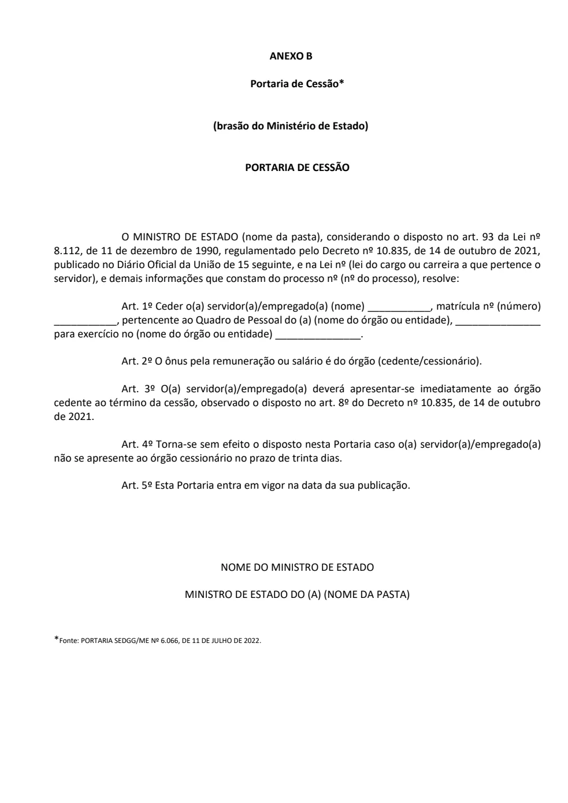
Anexos e portarias
PDF · p. 25ANEXO c
Portaria de Requisição*
(brasão do Ministério de Estado)
PORTARIA DE CESSÃO
O MINISTRO DE ESTADO (nome da pasta), considerando o disposto no art. 93 da Lei nº
8.112, de 11 de dezembro de 1990, regulamentado pelo Decreto nº 10.835, de 14 d e outubro de 2021,
publicado no Diário Oficial da União de 15 de outubro de 2021, e, ainda, pela (o) (ato que concedeu poder
de requisição ao órgão), e demais informações que constam do processo nº (nº do processo), resolve:
Art.1º Disponibilizar a requisição do(a) servidor(a)/empregado(a ) (nome) ___________,
matrícula nº (número) ___________, pertencente ao Quadro de Pessoal do ( a) (nome do órgão ou
entidade),_______________ para exercício no (nome do órgão ou entidade) ___________.
Art.2º O ônus pela remuneração ou salário é do órgão (requisitado/requisitante).
Art.3º O(a) servidor(a)/empregado(a) deve se apresentar imediatamente ao órgão
requisitante.
Art.4º Esta Portaria entra em vigor na data da sua publicação.
NOME DO MINISTRO DE ESTADO
Ministro de Estado do (a) (nome da Pasta)
Ver página original — tabelas, imagens e diagramas
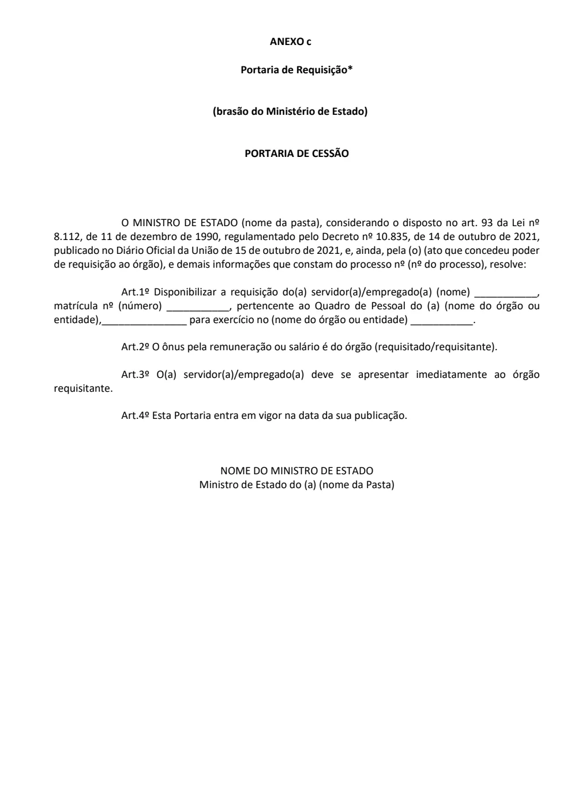